Live: on main.
22–23 Oct 2026. In Admin → Patch notes this is v0.108h.
The player card on Stats showed a flat drawn head. Your 3D man from the shop and the garden was not on it.
The card was built before it could draw a 3D man.
The card draws your own 3D footballer, in your club's home kit. "Save image" puts him in the PNG too. If a phone cannot run 3D, the card shows the drawn head, as before.
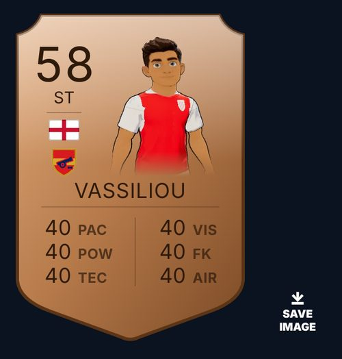
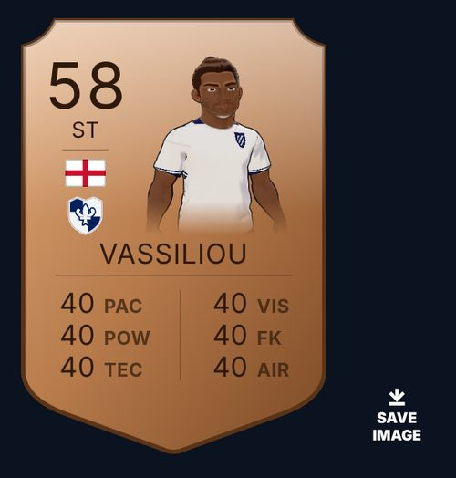
On a 3D man the face was a different colour from the arms. On dark tones the face looked pale and grey next to the arms.
The head and the body did not take their colour from the same place, so one tone came out as two colours.
Face, neck, arms and hands now use one colour, the tone you pick. This is for every 3D man everywhere: shop, garden, cut scenes, the card and your team-mates.
Before: clearly different. After: the same to the eye. (A gap under about 2.3 can't be seen.)
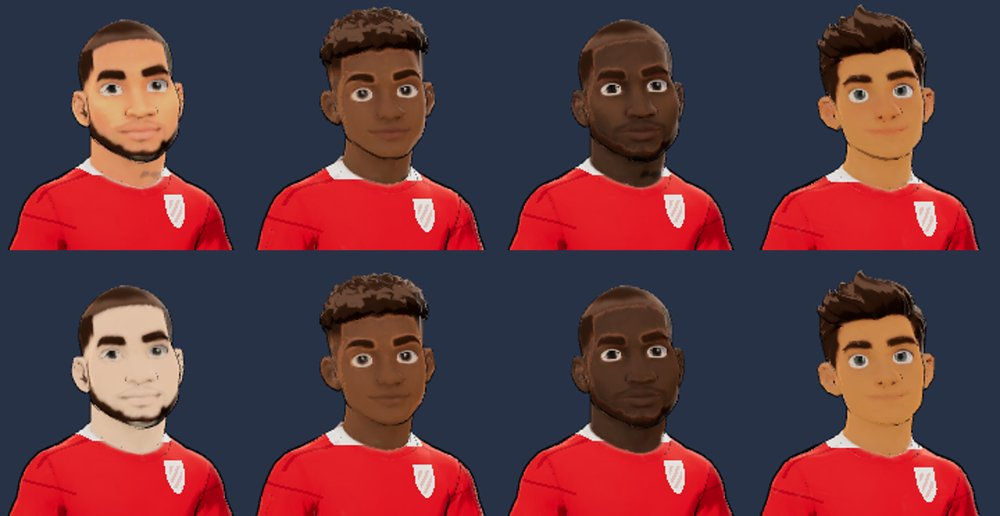
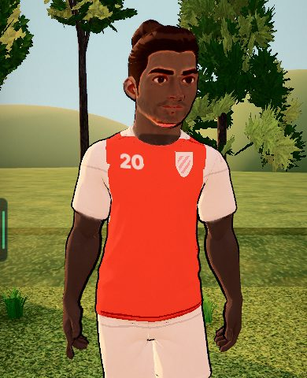
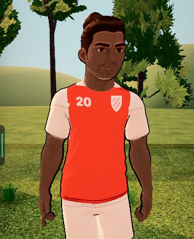
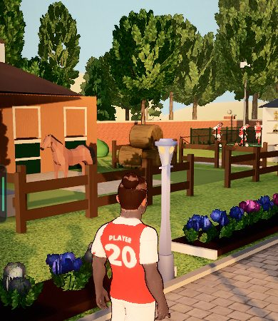
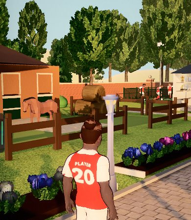
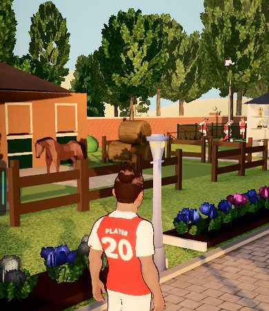
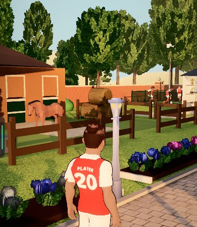
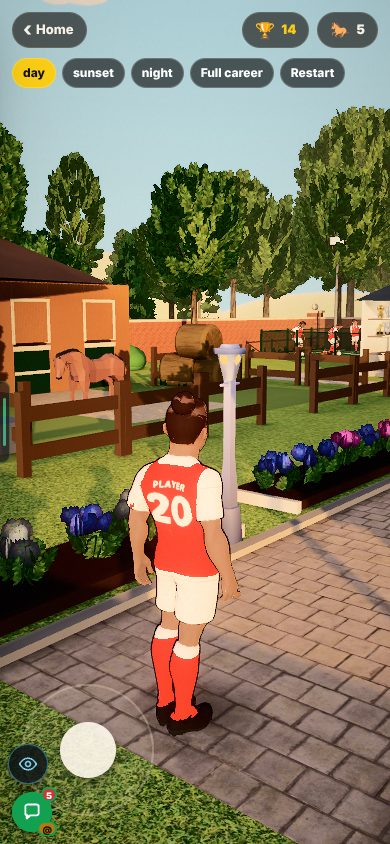
"Players are huge." Men in a real match chance were 1.56 times their old size (size C). The keeper looked like a giant.
Size C dropped both shrinks at once, so every man grew by more than half.
Men are back to size B: about 22 px on a phone long-range chance. The keeper is back to a man's height. The pitch is the same.
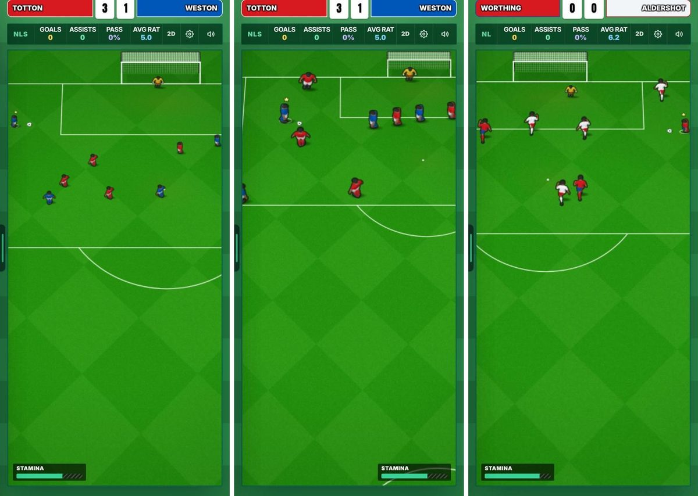
Look forMen about the same height as the six-yard box is deep, not bigger.
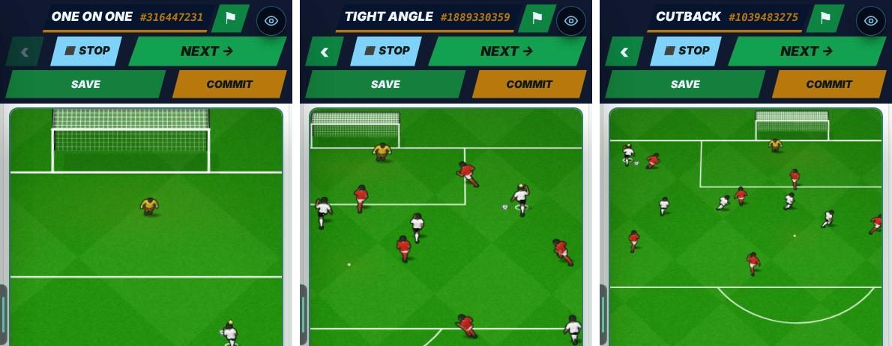
Look forThe keeper is no taller than the striker.
On a header, a volley or the Head & Volley drill, men were 1.2 to 1.45 times bigger than on other chances.
These chances use a closer camera. A closer camera made the men bigger too.
Men are drawn at the same size whatever the camera: 22 px on a phone, the same as every chance.
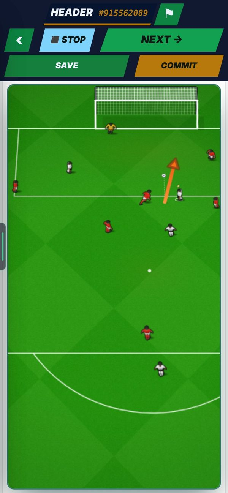
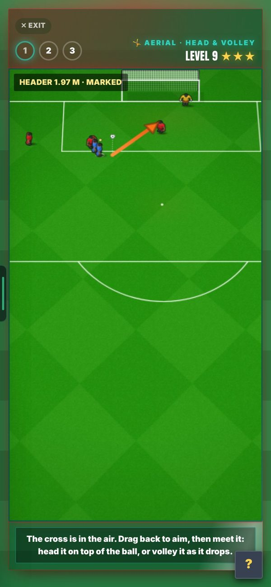
Look forThe men stay normal size as the cross comes in.
Every build-up looked the same, and none showed how the move started.
There was one way to build up to a chance.
Each build-up plays a whole move in about 3 s, in one of three styles:
Look forLong ball: one quick pass forward, then the chance.
Look forTiki-taka: short passes, then the chance.
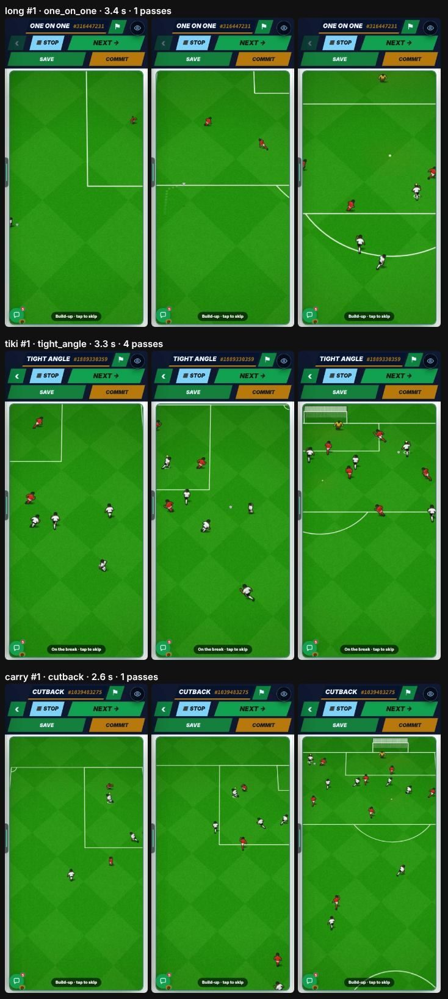
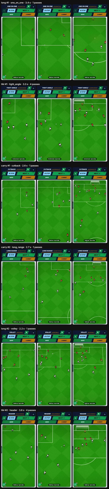
Aerial did not change how easy it was to hit the sweet spot. The circle was hard to see on the white ball.
The circle was one size for everyone, and pale.
Better Aerial = a bigger circle: at Aerial 90 it is about 2.6 times the Aerial 30 size. The circle is gold, so it shows on the ball.
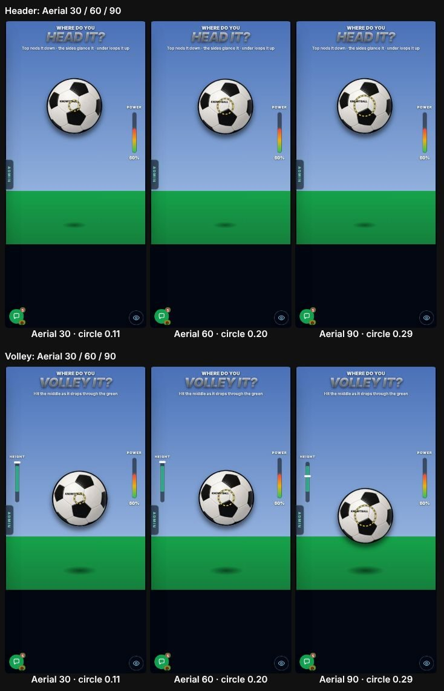
Look forThe gold circle on the ball.
The newest highlights and match feel were off unless you found the switch.
Both were new and started off while they were tested.
A new phone starts with both on. Both rows stay in Settings, so anyone can turn them off.
Every old patch-note picture and clip sits inside the site, which makes it heavier. The 🔔 loaded every note in full, so admin pages were slow.
Patch-note media had nowhere else to live, and the 🔔 read the whole archive.
Admin → Patch notes → "Move media to Cloudflare" copies them across. The 🔔 now loads a short headline list: admin pages are about 680 KB lighter.
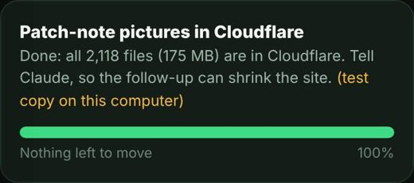
On 22 Oct Vercel hit its free limit of 100 builds a day, so live updates could stop.
Every push to any branch made a build. Side branches made 92 of the 104 builds that day.
Only main makes a Vercel deploy now.
On these chances men can be up to about 31 px on a phone, against 22 px on other chances.
The same closer-camera effect that headers had.
Not changed. Harry decides if they get the same fix as headers.
The even skin was checked on test renders only.
No one has opened the shop or garden on a real phone since the fix.
Recommended: look on a phone at one dark and one light tone, in the garden and on the card.
Penalties, cutbacks and one-on-ones. Harry decides if men there go to 22 px too.